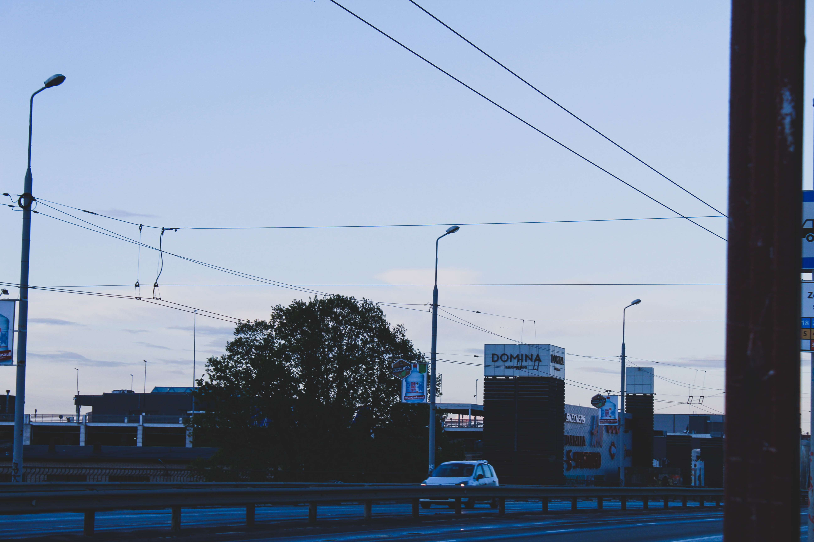
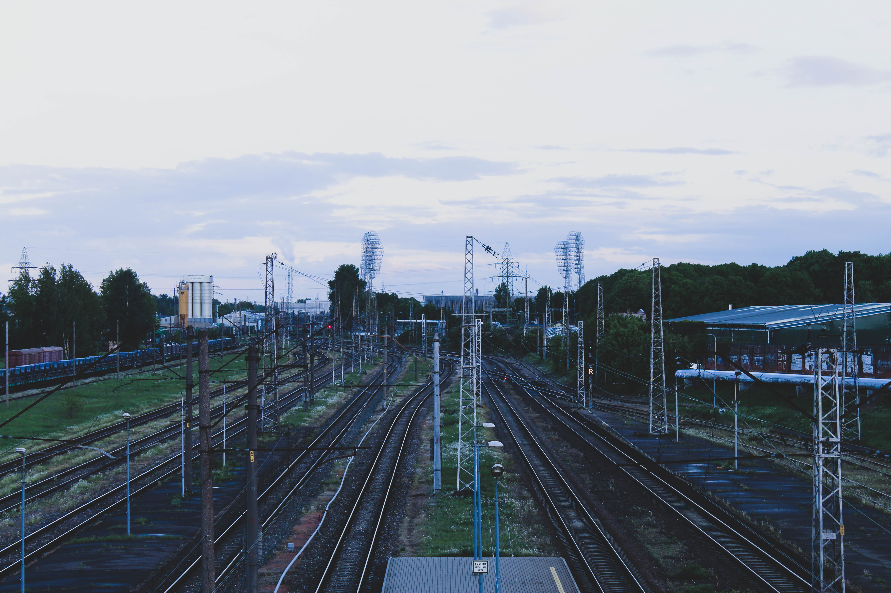

Ieriķu iela
 Tādēļ, ka pamatā izvēlos 23. trolejbusu, lai dotos līdz Latvijas Universitātei, tad turpināšu savu stāstu sākotnēji pieturoties pie tieši šī trolejbusa maršruta. Pēc Vaidavas ielas mēs nogriežamies uz Ieriķu ielas, kas stiepjas garumā no Biķernieku ielas līdz pat Zemitānu dzelzceļa stacijai. Ieriķu iela pilda robežas funkciju Purvciema ziemeļos. Galvenais pieturas punkts uz šīs ielas ir tirdzniecības centrs “Domina Shopping”.
Purvciemu un nākamo Rīgas pilsētas daļu pa ceļam uz centru – Grīziņkalnu, savieno Zemitānu tilts, uz kura satiekas Ieriķu un Aleksandra Čaka ielas. Tilts nosaukts par godu Zemitānu stacijai, savukārt pati Ieriķu iela tā nodēvēta, jo šeit atrodamais dzelzceļa līnija stiepjas no Rīgas līdz pat Ieriķiem Amatas novadā.